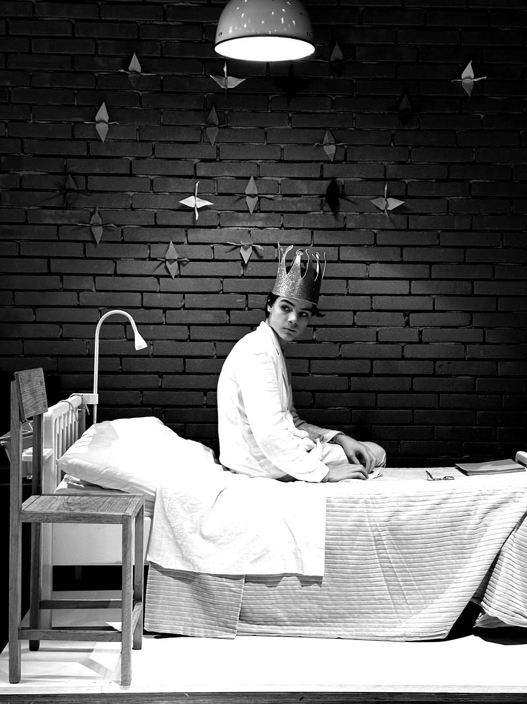
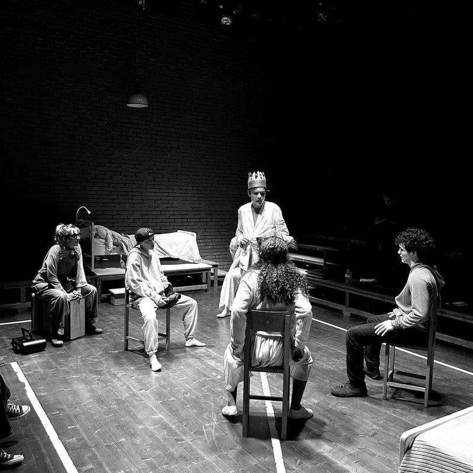
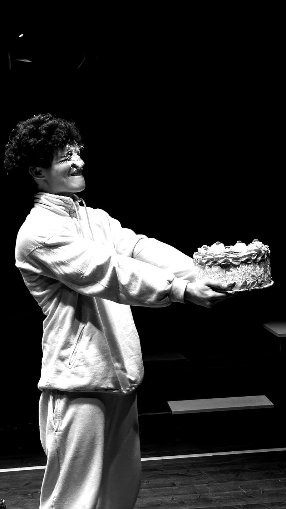

Chi come me di Roy Chen, regia di Andrée Ruth Shammah Teatro Franco Parenti, Milano Dicembre 2026
Chi come me?
Strumenti semplici per capire, parlare e, se serve, chiedere aiuto. Per genitori, insegnanti ed educatori.
Chi come me racconta cinque adolescenti in un centro di salute mentale e il teatro che li aiuta a ritrovarsi. È nato da una storia vera: quella dell’autore Roy Chen, che nel 2019 ha trascorso settimane con i ragazzi di un centro di Tel Aviv.
Questa pagina è per te, se sei genitore, insegnante o educatore, o lavori con ragazzi giovani e spesso non li capisci, e vuoi continuare a farti domande anche dopo il sipario. Non trovi diagnosi né ricette: trovi spunti per guardare meglio, parole per iniziare una conversazione e indirizzi a cui rivolgerti.
Noi siamo Unhate Foundation: siamo partner dello spettacolo e lavoriamo al fianco dei più giovani e delle loro fragilità.
Non devi capire tutto da solo: a te basta osservare. Se qualcosa non ti torna, chiedere aiuto è la scelta giusta.

In questa pagina
Le voci
Prima degli strumenti, ascoltiamo loro. Queste sono frasi vere, dette da ragazze e ragazzi nelle interviste di Unfiltered, la nostra ricerca annuale su come si cresce oggi tra i 13 e i 24 anni.
“Stiamo insieme per non stare soli ma alla fine non ci diciamo niente davvero.”
“Mi sento male quando gli altri non mi capiscono.”
“Mi sento bene quando mi sento nelle mie scarpe.”
“Mi sento male quando vengo giudicata perché non ho raggiunto quello che avrei dovuto alla mia età.”
“Abbiamo il dono della parola, ma non sappiamo usare le parole.”
“Un tempo mi fidavo ciecamente dei miei genitori… ora non mi fido veramente di nessuno.”
“Mi sento capita quando c’è davanti a me una persona che mi sta davvero dedicando del tempo senza fretta. […] Quelle persone che ti fanno respirare.”
“Devi fare sempre di più, essere sempre sul pezzo. Ma poi cosa rimane?”
“Non puoi darti il senso da sola, servono sempre gli altri.”
“Mi sento bene quando ho qualche secondo in più per pensare a quello che sta succedendo.”
Ascoltarli è il primo passo. Ecco da dove iniziare.
CapireCapire
Un figlio o una figlia adolescente cambia umore, a volte si chiude. Quasi sempre è crescita, a volte chiede più attenzione. Questa sezione ti aiuta a distinguere, un tema alla volta. Non serve a fare diagnosi: serve a notare che qualcosa sta cambiando e a decidere se parlarne con qualcuno.
Lettura: 5 minuti
Prima di tutto: l’adolescenza è un passaggio
Il corpo cambia in fretta e la mente deve lasciare il mondo rassicurante dell’infanzia per costruirsi un’identità propria. La parola “crisi” viene dal greco krisis: un passaggio, con un prima e un dopo. Tutti i ragazzi lo attraversano, e solo una parte sta davvero male. Tu conosci tuo figlio meglio di chiunque: fidati delle tue sensazioni, sono una buona bussola. E se qualcosa non ti è chiaro, chiedere aiuto è la scelta giusta: non devi capire tutto da solo.
Fa parte della crescita
- incertezze, piccole ansie o momenti di tristezza
- sbalzi d’umore e reazioni d’impulso
- un calo dei voti dopo una delusione
- litigi per affermare la propria libertà
- mode nel vestire che agli adulti sembrano assurde
A una condizione: che non ci sia il desiderio di fare del male a sé o agli altri.
Come distinguere: quattro domande
Tristezza, rabbia, chiusura, sbalzi d’umore: lo stesso comportamento può far parte della crescita oppure essere il segnale di un disagio. A fare la differenza non è il comportamento in sé, ma come si presenta. Queste quattro domande non servono a fare una diagnosi: ti aiutano a capire quando è il caso di chiedere un parere.
-
Quanto è intensa?
Una reazione molto più forte di ciò che l’ha provocata merita attenzione.
-
Quanto spesso succede?
Un episodio isolato pesa meno di uno che torna.
-
Quanto dura?
Un cambiamento passeggero, legato a un fatto preciso, è diverso da uno che si prolunga.
-
Quanto pesa sulla vita di ogni giorno?
Scuola, sonno, amici, cura di sé: quando cambiano, il segnale conta di più.
“Non lo riconosco più.”
Un cambiamento improvviso, in poco tempo, è uno dei segnali più importanti. Così come un calo improvviso a scuola o nello sport, o l’abbandono di ciò che amava fare.
Tema per tema
Cosa potresti notare: è spesso giù, svogliato o irritabile; perde interesse per cose che prima amava; passa giornate in camera ed evita gli amici; dorme troppo o troppo poco; ha momenti di paura improvvisa con il cuore che batte forte, fiato corto, la sensazione di perdere il controllo.
Quando fare più attenzione: quando dura settimane, porta all’isolamento o rende impossibile studiare. Negli adolescenti la tristezza a volte si vede come rabbia o nervosismo.
Cosa fare adesso
Non devi arrivare da solo a una risposta. Prova a parlarne con calma, senza giudicare (Parlarne). Se il dubbio resta, confrontati con il pediatra o con uno specialista (A chi rivolgersi).
Cosa potresti notare: toglie un cibo dopo l’altro, non vuole mangiare con gli altri, è molto preoccupato per il proprio corpo; controlla di continuo lo specchio o lo evita del tutto; nasconde un presunto difetto; evita uscite per non farsi vedere.
Quando fare più attenzione: quando diventa un pensiero fisso che toglie spazio alla vita sociale. Scegliere uno stile alimentare, per esempio vegetariano, non è di per sé un segnale.
Cosa fare adesso
Non devi arrivare da solo a una risposta. Prova a parlarne con calma, senza giudicare (Parlarne). Se il dubbio resta, confrontati con il pediatra o con uno specialista (A chi rivolgersi).
Cosa potresti notare: paura o resistenza ad andare a scuola; “tutto bene” detto sempre, ma racconta poco; mal di pancia o di testa senza una causa chiara; oggetti rovinati o spariti senza spiegazione; escluso dalle chat o dalle feste di classe. Oppure, al contrario: aggressività, prepotenza, esplosioni di rabbia sproporzionate.
Quando fare più attenzione: quando gli episodi si ripetono. Chi subisce spesso tace per paura; chi fa prepotenze sta comunque esprimendo un disagio.
Cosa fare adesso
Non devi arrivare da solo a una risposta. Prova a parlarne con calma, senza giudicare (Parlarne). Se il dubbio resta, confrontati con il pediatra o con uno specialista (A chi rivolgersi).
Cosa potresti notare: non riesce a staccarsi dal gioco o dal telefono anche quando ne soffrono sonno e studio; si sveglia di notte per le notifiche; è molto irritabile quando deve smettere; cambia peso, appetito o sonno all’improvviso; si allontana dalla scuola e dagli amici.
Quando fare più attenzione: molte ore online non significano per forza un problema. Conta come le passa: se condivide e si diverte, o se si perde e sposta lì tutte le relazioni.
Cosa fare adesso
Non devi arrivare da solo a una risposta. Prova a parlarne con calma, senza giudicare (Parlarne). Se il dubbio resta, confrontati con il pediatra o con uno specialista (A chi rivolgersi).
Tre cose da ricordare
Nel dubbio, non aspettare. Un problema serio non si risolve da solo. Se è un falso allarme, aver chiesto un parere non fa danni.
Lascia andare il senso di colpa. Chiedere aiuto non significa aver sbagliato. Quello che si è perso si può recuperare, e a volte basta cambiare qualcosa in famiglia.
Costruisci un’alleanza con la scuola, centrata sul benessere di tuo figlio, senza cercare colpevoli.
Se c’è un pericolo immediato, per esempio minaccia di farsi del male o si è fatto male, chiama il 118.
Hai notato qualcosa?
Il passo successivo è parlarne.

Parlarne
Iniziare una conversazione non vuol dire parlare subito di malessere o affrontare un confronto a cuore aperto. Non serve la frase perfetta. Spesso basta far capire che ci sei, e che hai voglia di ascoltare. Qui trovi qualche frase per cominciare, idee sul momento giusto e cosa fare mentre parlate.
Lettura: 3 minuti
Per iniziare: basta aprire una porta
Iniziare significa far sapere a tuo figlio, o ai ragazzi con cui lavori, che hai notato qualcosa e che sei disponibile. Se ora non vogliono parlare, va bene lo stesso: la porta resta aperta. Prova una di queste frasi, o usala come spunto per trovare le tue parole.
- “Ti vedo un po’ pensieroso in questi giorni. Ti va di raccontarmi?”
- “Non devi spiegarmi niente adesso. Volevo solo dirti che ci sono.”
- “È da un po’ che non chiacchieriamo noi due. Come stai, davvero?”
- “Mi sembra che qualcosa ti pesi. Se vuoi parlarne, io ascolto.”
- “Oggi sembravi arrabbiato. Vuoi che ne parliamo o preferisci stare un po’ per conto tuo?”
- “Non ti sento ridere da un po’. Va tutto bene?”
- “Puoi dirmi qualsiasi cosa. Non mi arrabbio e non ti giudico.”
- “Anch’io alla tua età avevo giornate storte. Com’è andata la tua?”
- “Ho notato che esci meno con i tuoi amici. Ti va di dirmi come mai?”
- “È un po’ imbarazzante chiedertelo, ma ci tengo: come ti senti in questo periodo?”
- “Se c’è qualcosa che ti preoccupa, anche una piccola cosa, mi piacerebbe saperlo.”
- “Quando avrai voglia di parlare, io ci sarò.”
Trova il momento giusto
Molti ragazzi si aprono più facilmente quando non si sentono sotto i riflettori. Le conversazioni importanti nascono spesso mentre si fa altro, fianco a fianco, senza doversi guardare negli occhi. Un buon momento è quello in cui tutti e due siete tranquilli e non avete fretta.
In macchina
Seduti uno accanto all’altro, con la strada davanti: parlare viene più naturale.
Mentre cucinate insieme
Le mani occupate aiutano ad abbassare la tensione.
Durante una passeggiata
Anche dieci minuti, magari portando fuori il cane.
Con un messaggio
A volte è più facile scrivere che parlare. Un “come va?” può aprire una conversazione da continuare di persona.
Facendo qualcosa che piace a lui o a lei
Una serie, un videogioco, una partita: entra nel suo mondo prima di fare domande.
Prima di dormire
La sera, con la luce bassa, molti ragazzi si raccontano di più.
Mentre parlate
Quando la conversazione parte, la cosa più utile è ascoltare. Non devi avere tutte le risposte: spesso un ragazzo ha solo bisogno di sentirsi ascoltato prima ancora che capito.
Lascia spazio ai suoi tempi, anche alle pause.
Prima di consigliare, chiedi: “Vuoi un consiglio o vuoi solo che ti ascolti?”
Anche se a te sembra una cosa piccola, per lui o per lei può essere grande.
“Come ti sei sentito?” apre di più di “Ti sei arrabbiato?”
“Grazie per avermelo detto” fa capire che parlare con te è stata una buona idea.
Meglio evitare
-
Invece di…
“Alla tua età avevo problemi ben più seri.”
Prova con…
“Raccontami com’è per te.”
-
Invece di…
“Dai, non è niente, passerà.”
Prova con…
“Capisco che ti pesi. Parliamone.”
-
Invece di…
“Te l’avevo detto.”
Prova con…
“Cosa pensi che potremmo fare adesso?”
-
Invece di…
“Stai sempre attaccato al telefono, per forza stai così.”
Prova con…
“Com’è andata oggi, davvero?”
Dopo la conversazione
Una conversazione non deve risolvere tutto. Nei giorni successivi torna a chiedere come va, con leggerezza, senza insistere. Se quello che hai sentito ti preoccupa, o se il cambiamento dura nel tempo, non devi gestirlo da solo: ci sono persone e servizi che possono aiutare entrambi.
A chi rivolgersi
Chiedere un parere non vuol dire che ci sia per forza un problema. A volte serve solo confrontarsi con qualcuno che conosce bene i ragazzi, per capire se quello che vediamo è normale o merita più attenzione. Qui trovi a chi rivolgerti, partendo dalle persone più vicine.
Lettura: 2 minuti
Il primo passo: chi è già vicino a te
-
Il pediatra o il medico di base
Conosce tuo figlio e la sua storia. Può darti un primo parere e, se serve, indirizzarti ai servizi giusti.
Gratuito
-
Lo sportello d’ascolto della scuola
Molte scuole hanno uno psicologo a disposizione di studenti, insegnanti e genitori. Per accedere basta chiedere alla segreteria.
Gratuito
Per parlare con qualcuno
-
Telefono Azzurro
Per bambini, ragazzi e adulti preoccupati per loro
24 ore su 24, tutti i giorniGratuito
-
Telefono Amico Italia
Per chiunque abbia bisogno di parlare
Telefono 24 ore su 24 · WhatsApp 18–21Servizio gratuito; la chiamata costa come una normale telefonata verso un fisso (nulla con i minuti illimitati). WhatsApp gratuito.
Numeri verificati a novembre 2026 sui siti di Telefono Azzurro e Telefono Amico
I servizi pubblici in Lombardia
Se il pediatra o il medico lo consigliano, o se il cambiamento dura nel tempo, ci sono servizi pubblici pensati proprio per bambini e ragazzi. Si paga solo il ticket, se non si è esenti.
-
Consultori familiari
Psicologi e altri professionisti che seguono persone, coppie e famiglie.
Trova il consultorio più vicino -
Neuropsichiatria dell’infanzia e dell’adolescenza (NPIA)
Il servizio pubblico dedicato ai minori da 0 a 18 anni, attivo presso le ASST. Si accede ai poli territoriali della propria zona.
Informazioni su Regione Lombardia -
PsyMap
Il motore di ricerca dell’Ordine degli Psicologi della Lombardia: inserisci l’indirizzo e trovi prima i servizi pubblici vicini, poi i professionisti.
La ricerca è gratuita; i professionisti privati sono a pagamento.
Cerca su psymap.it
Se c’è un pericolo immediato, chiama il 118.
I dati
Unfiltered è il nostro osservatorio sui ragazzi tra i 13 e i 24 anni: una ricerca che parte dalle loro voci per capire cosa significa crescere oggi. Qui trovi cinque cose che abbiamo imparato, e cosa possono voler dire per te.
Lettura: 2 minuti
-
La fragilità nasce nelle relazioni.
Non dipende da “come sono fatti” i ragazzi, ma dalle relazioni e dai contesti in cui crescono. Quando mancano continuità e punti di riferimento, è più facile bloccarsi.
Cosa significa per te: esserci con costanza conta più di qualsiasi consiglio perfetto.
-
Tante possibilità, poco orientamento.
Avere il mondo aperto non basta: senza qualcuno che accompagna, l’incertezza diventa pressione e fatica a scegliere.
Cosa significa per te: aiutare a scegliere vuol dire accompagnare nel tempo, non dare tutte le risposte in una volta.
-
I passaggi sono i momenti più delicati.
Il cambio di scuola, o il passaggio dalla scuola al lavoro, concentrano molte fatiche, soprattutto quando si perdono i riferimenti di prima.
Cosa significa per te: nei mesi di passaggio, una presenza in più fa la differenza.
-
Il benessere psicologico riguarda tanti ragazzi.
Ansia, stanchezza, sentirsi inadeguati non sono casi isolati, ma segnali diffusi.
Cosa significa per te: se li noti, non sei l’unico e non è una colpa. Parlarne è il primo passo.
-
I ragazzi chiedono di contare.
Non vogliono solo essere ascoltati, ma avere spazi in cui decidere e fare. Quando succede, la fragilità può diventare energia.
Cosa significa per te: chiedi la loro opinione e lascia spazio alle loro scelte.
Scuole e aziende
Lavori con gli adolescenti a scuola, nello sport o in altri contesti educativi? Insieme a Fondazione Poetica abbiamo preparato un toolkit con pratiche semplici, nate dall’ascolto dei ragazzi di Unfiltered, da usare con il tuo gruppo.
Scopri il toolkitPortiamo questo dialogo dove serve
Incontriamo genitori, insegnanti, educatori e lavoratori nelle scuole e nelle aziende per parlare di adolescenti, benessere e prevenzione. Se vuoi organizzare un incontro, scrivici.
ScriviciPer approfondire
Libri, film e serie
I libri della collana dell’Asino d’oro
Bios Psychè Adolescenza è una collana di L’Asino d’oro edizioni dedicata all’adolescenza, pensata sia per i ragazzi sia per gli adulti. Ogni volume approfondisce un tema ed è scritto da psichiatre, psichiatri, psicologhe, psicologi e psicoterapeuti.
Anoressia
Le patologie del comportamento alimentare
Ludovica Costantino, Luca Giorgini, Manuela Petrucci
Dismorfofobia
Quando vedersi brutti è patologia
Donatella De Lisi, Eva Gebhardt, Luca Giorgini, Andrea Raballo
Attacchi di panico
Il corpo che grida
Claudia Dario, Riccardo Saba, Luana Testa
Depressione
Quando non è solo tristezza
Cecilia Di Agostino, Marzia Fabi, Maria Sneider
Adolescenti nella rete
Quando il web diventa una trappola
Assunta Amendola, Beniamino Gigli, Alessandra Maria Monti
Dipendenza da sostanze
Un mondo senza sogni
Cinzia Fazio, Silvia Leonardelli, Emanuela Lucarini, Niccolò Trevisan
Il bullismo
È o non è cattiveria?
Marzia Fabi, Nella Lo Cascio, Fiorella Quaranta, Eleonora Serale
Gaming patologico
Quando il gioco diventa pericoloso
Emanuela Atzori, Dori Montanaro, Marinica Montanaro, Ilario Ritacco
Giovani autori di reato
Delinquenti non si nasce
Laura Castaldo, Pieritalo Pompili, Ilaria Usai
Altri libri, film, documentari e serie
A volte le storie aiutano a capire meglio un problema, e possono diventare una base comune da cui partire per parlarne. Qui sotto ce ne sono alcune da leggere o da guardare, anche insieme a un figlio o a una figlia. Se vuoi proporne una a tuo figlio o a tua figlia, prima guardala o leggila tu.
-
Un bambino con il volto diverso dagli altri entra per la prima volta in una scuola e deve fare i conti con l’esclusione dei compagni. Col tempo si guadagna il loro affetto. Perché vederlo: fa capire cosa si prova a essere esclusi per il proprio aspetto e apre il discorso sulla diversità.
-
Da bambino Shoya ha preso di mira una compagna sorda. Cresciuto, si sente solo e in colpa e cerca l’occasione per scusarsi. Perché vederlo: mostra il bullismo anche dalla parte di chi lo ha fatto e dei sensi di colpa che restano.
-
Tre ragazzi bersaglio di pregiudizi e chiacchiere a scuola stringono amicizia e si sostengono a vicenda. Perché vederlo: mostra come l’amicizia può essere una risposta ai pregiudizi.
-
Candida viene derisa per il corpo e per la sua inflessione dialettale. Risponde agli insulti e prende le difese di un nuovo amico, Jacopo. Perché vederlo: mostra una ragazza che reagisce alle offese e difende un altro.
-
Jimmy, 15 anni, è bravissimo a calcio ma si blocca quando si sente osservato. A scuola un gruppo guidato da Gordon Burley lo prende in giro e lo picchia. Perché vederlo: mostra cosa provoca il bullismo in un ragazzo insicuro.
-
Un bambino di Palermo è minacciato da un compagno prepotente e non ne parla con nessuno. Il padre gli racconta la storia di Giovanni Falcone e di come si è opposto alle prepotenze. Perché leggerlo: spiega a un bambino perché non bisogna cedere ai soprusi.
-
Asja, 14 anni, si mostra spavalda ma nasconde una grande sofferenza, e prende di mira una compagna più fragile, Maria. Perché leggerlo: fa vedere cosa può stare dietro chi fa il bullo e cosa vive chi lo subisce.
-
Stefania e Giada, amiche da sempre, iniziano il liceo e incontrano due compagne popolari che escludono Giada perché timida, anche dalla chat di classe. Stefania, per farsi accettare, la lascia sola. Perché leggerlo: è raccontato dal punto di vista di chi assiste e sceglie se stare zitta, e mostra il coraggio di dire basta.
-
Saggio pensato per i genitori, ma utile anche a insegnanti e a chi lavora con bambini e adolescenti. Spiega come funziona il mondo della rete e che cos’è il cyberbullismo. Perché leggerlo: fa riflettere sul ruolo degli adulti.
-
Come nasce Facebook, visto dalla parte di Zuckerberg, all’epoca studente a Harvard. Alcuni colleghi lo accusano di aver preso la loro idea e lo portano in tribunale. Perché vederlo: fa capire da dove arriva uno dei social più usati.
-
Ragazzi che, protetti dall’anonimato online, danno sfogo a gelosie e rancori credendo di non pagarne il prezzo. La responsabile viene scoperta e poi subisce a sua volta bullismo. Perché vederlo: fa vedere cosa muove chi attacca online e che cosa ne consegue.
-
Ash passa le giornate in un videogioco bellico e fuori dal gioco non ha rapporti con nessuno. A poco a poco non distingue più il reale dal virtuale. Perché vederlo: racconta l’immersione totale nel gioco e l’isolamento che può portare.
-
Serie di episodi indipendenti, ambientati nel futuro, che immaginano situazioni assurde nate dalle nuove tecnologie. Perché vederla: pone domande serie sul legame tra persone e macchine e fra i ragazzi ha successo.
-
Documentario girato senza filtri nel centro di Daxing, vicino a Pechino, dove vengono curati ragazzi dai 13 ai 18 anni. Raccontano in prima persona la loro storia e le fasi del recupero. Perché vederlo: mostra dove può arrivare la dipendenza dal web.
-
L’autrice ha scritto un accordo da firmare con il figlio al momento di regalargli lo smartphone, e il testo è diventato molto noto in rete. Perché leggerlo: ricorda ai genitori di accompagnare i figli online come fanno nel resto della vita.
-
Cam Adair racconta i dieci anni in cui è stato dipendente dai videogiochi: ha lasciato la scuola e la squadra di hockey, ha giocato fino a 16 ore filate e ha nascosto tutto ai genitori, finché ha chiesto aiuto. Oggi guida Game Quitters, che sostiene i giocatori in 95 paesi. Perché vederlo: racconta in breve e in prima persona come si cade nella dipendenza e come se ne esce.
-
Docu-film sui rischi di un uso poco critico dei social e della rete: utenti manipolati, dati personali raccolti e venduti, dipendenza, pressione sulle scelte politiche, complottismi. Perché vederlo: aiuta a capire come funzionano i social e cosa c’è dietro.
-
Docu-serie Netflix sulla storia dei videogiochi, con immagini d’epoca e interviste a figure chiave come Nolan Bushnell (Atari) e Tomohiro Nishikado (Space Invaders). Segue le tappe in ordine di tempo e mostra anche l’impatto sulla cultura e sul costume. Perché vederla: fa capire da dove arrivano i videogiochi e cosa hanno significato per la cultura.
-
In un futuro cupo, con gran parte della gente che vive in baraccopoli, OASIS è un gioco online che funziona da mondo parallelo. Il diciassettenne Wade Watts ci entra con il suo avatar per vincere la gara lasciata dal fondatore. Il film mostra con realismo cosa spinge a rifugiarsi nel gioco e come i due mondi si mescolino, anche con amicizie vere. Perché vederlo: dà un’idea realistica del mondo dei giochi online e delle ragioni per cui ci si entra.
-
Theodore, in crisi dopo il divorzio, riempie il tempo con lavoro, videogiochi e chat. Poi installa un sistema operativo con intelligenza artificiale, Samantha, e finisce per credere di amarla. Intanto evita le relazioni con persone reali. Perché vederlo: mostra come il legame con una macchina può prendere il posto delle relazioni reali.
-
Il deejay Bruno ripercorre la nascita di una radio libera con gli amici nel 1975 e la morte di Ivan, detto Freccia, per tossicodipendenza, che porta il gruppo a chiudere l’esperienza. Perché vederlo: mostra cosa lascia in un gruppo la perdita di un amico per la droga.
-
Luca, sedici anni, rifiuta le sostanze. Perché vederlo: mostra un ragazzo che le sostanze le rifiuta.
-
Biografia di Amy Winehouse, morta a 27 anni per eccesso di droga e alcol, dall’infanzia con gravi difficoltà in famiglia fino al successo. Perché vederlo: segue il percorso di una persona di talento fino alla morte per le sostanze.
-
Tar e Gemma, 14 anni, fuggono da famiglie difficili e a Bristol incontrano l’eroina con altri due amici: la vivono come una via di fuga e ne diventano dipendenti. Perché leggerlo: racconta la dipendenza dal punto di vista di tutti i personaggi, genitori compresi.
-
Contenuto forte: guardalo o leggilo prima di proporlo a tuo figlio o a tua figlia.
I diari di una ragazza di 15 anni che in due anni diventa dipendente: uno racconta la caduta, l’altro il tentativo di risalire. Perché leggerlo: descrive l’esperienza delle droghe in modo molto realistico e lascia intuire la solitudine che c’è dietro.
-
Charlie è timido e insicuro. Tra amicizie e primo amore riesce ad attraversare un periodo difficile. Perché vederlo: mostra come amicizia e primo amore aiutano ad attraversare un periodo difficile.
-
Craig, adolescente in ansia per le aspettative del padre, decide di trascorrere cinque giorni in una clinica psichiatrica. Perché vederlo: mostra il peso delle aspettative dei genitori e la scelta di chiedere aiuto.
-
Dopo la perdita della madre Bastian cade in depressione. Salvando il regno di Fantasia ritrova la voglia di vivere. Perché vederlo: racconta in forma di fiaba il lutto e la ripresa.
-
Con il supporto di uno psichiatra, Conrad si libera dal senso di colpa per la morte del fratello e recupera il legame con il padre. Perché vederlo: mostra il ruolo del supporto psichiatrico nel superare il senso di colpa.
-
Luca, studentessa che combatte da anni una depressione profonda, si prepara a un esame importante con l’aiuto di un compagno. Perché vederlo: segue una ragazza che convive con la depressione e accetta l’aiuto di un compagno.
-
Bastiano, 10 anni, cade in depressione dopo la morte della madre e vive isolato, anche perché alcuni compagni lo prendono in giro. Trova per caso un libro e, leggendone le avventure, recupera la sua vitalità. Perché leggerlo: con immagini e metafore racconta come si resta travolti dalla depressione e come se ne può uscire.
-
Contenuto forte: guardalo o leggilo prima di proporlo a tuo figlio o a tua figlia.
Ragazzi e ragazze in un istituto penale minorile di Napoli, ispirato al carcere di Nisida. Perché vederla: mostra la vita dei ragazzi dentro un istituto penale minorile.
-
Mathieu, giovane di una banlieue parigina arrestato per furto, scopre nella musica un altro modo di vivere. Perché vederlo: mostra che dopo un arresto può aprirsi un’altra strada.
-
Contenuto forte: guardalo o leggilo prima di proporlo a tuo figlio o a tua figlia.
Due amici cresciuti in un quartiere degradato finiscono su strade diverse. Perché vederlo: mostra come lo stesso quartiere porti a esiti diversi.
-
Contenuto forte: guardalo o leggilo prima di proporlo a tuo figlio o a tua figlia.
In un riformatorio siciliano un insegnante propone un modo diverso di fare scuola e, superate le provocazioni, conquista la fiducia dei ragazzi. Perché vederlo: mostra che anche piccoli cambiamenti possono aprire spazi di speranza.
-
Indicato nel volume come lettura per giovani lettori.
-
Romanzo sull’ossessione di un giovane per la propria bellezza, fissata in un dipinto. Perché leggerlo: il volume lo usa per spiegare come ci si può vedere brutti a causa di ciò che si ha dentro.
-
Racconto in cui l’idea di mostruosità si supera cambiando modo di pensare: Quasimodo è bruttissimo ma ha un’interiorità preziosa. Perché leggerlo: mostra che la bellezza interiore e l’amicizia rafforzano la stima di sé.

Restiamo in contatto
Stiamo preparando una serie di incontri dal vivo nel 2027, per continuare a parlare di questi temi insieme a genitori, insegnanti ed educatori. Lasciaci la tua email: ti scriveremo quando saranno pronti. Promettiamo di non riempirti la casella di posta, e potrai cancellarti quando vuoi.